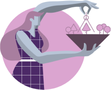

This Enneagram compatibility is task-oriented and both sides are
driven to working. They are constantly aware of their own high
expectations and standards.
Both types can provide self-discipline, hard work, and an amazing ability to put aside their personal feelings for the sake of their goals. They are so used to working hard that they usually prosper, which makes everyone around admire them and leads them to leadership roles with lots of responsibility. This goal- oriented match strives for excellence and therefore they are extraordinarily competent and impressive. These skills are useful when it comes to practical matters, such as planning and organizing, as they can objectively assign responsibilities according to people’s abilities.
This mixed pair is capable of dealing with everything. They will try to solve personal problems by discussing specific issues as neither of them likes emotionally charged arguments or unresolved arguments. Type 1s help type 3s to be more grounded and realistic; while Threes teach Ones to not be such perfectionists. This is a romantic match in which both sides are persistent, efficient and concerned with excellence and making a real difference in the world.
Both types can provide self-discipline, hard work, and an amazing ability to put aside their personal feelings for the sake of their goals. They are so used to working hard that they usually prosper, which makes everyone around admire them and leads them to leadership roles with lots of responsibility. This goal- oriented match strives for excellence and therefore they are extraordinarily competent and impressive. These skills are useful when it comes to practical matters, such as planning and organizing, as they can objectively assign responsibilities according to people’s abilities.
This mixed pair is capable of dealing with everything. They will try to solve personal problems by discussing specific issues as neither of them likes emotionally charged arguments or unresolved arguments. Type 1s help type 3s to be more grounded and realistic; while Threes teach Ones to not be such perfectionists. This is a romantic match in which both sides are persistent, efficient and concerned with excellence and making a real difference in the world.

Possible Conflicts and Differences of Opinion:
On the other hand, Thress tend to find Ones too strict, inflexible and judgmental in different areas. Whereas Threes generally value Ones’ ability to get things done, Threes can also feel that Ones are way too narrow-minded, methodical and focused on details rather than results. They may also have issues with Ones when they feel they are being judged not only for their attitude but also for their actions.
In conclusion, one side of this relationship feels overwhelmed and constantly criticized. Eventually, both gradually lose respect for the other: Ones lose respect for Threes integrity, and Threes lose respect for Ones’ effectiveness. A sudden break up may happen. However, if both find the bond to be useful for them, they can keep a professional relationship that doesn’t have the passion but is still beneficial to both parties for their personal status and professional success.
25
Enneagram 1 in Relationships